- info@electromed.com.co
- (57) 318 649 6540
- Cll 106 #14B-50

Equipos Humano
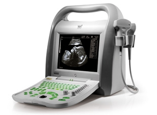
KX5500
Equipo digital para diagnostico por ultrasonido
Caracteristicas
- LCD 10.4 pulgadas, monitor LCD con alto brillo, alto contraste, ancha visión,imágenes más finas y lisas.
- Manipulación de menú-modo, viene lengua inglés, ruso, portugués, francés, español.
- Software con paquete de cálculos Abdominal, obstétrico, ginecológico, cardiaca, urológico, etc.
- Teclado retro iluminado.
- 28 grados de profundidad de ajuste en toda la visión, profundidad maxima245mm.
- Color pseudo：8 tipos.
- Almacenamiento permanentemente de 100 cuadros imágenes.
- Cine loop：256 cuadros.
- Disco dura interno con capacidad 250GB.
- Doble puertos de USB, memoria flash e impresora láser son disponibles.
- DICOM3.0.
- Viene 1 batería, trabaja durante 3 horas más conveniente de trabajar afuera.
Parametros
- Aplica control sistema ARM7 incrustada +sistema señal FPGA+ hardware sistema tecnología propietaria de ultrasonido, más confiable de la estabilidad.
- 10.4 pulgadas monitor LCD con alta brillo, alta contraste, ancha visión, las imágenes más finos y lisos.
- Manipulación de menú-modo, trae lengua ：inglés, ruso, portugués, francés, español.
- Doble puertos de transductor, puede identificar los transductores automáticamente, apoya unos transductores opcionales.
- Marca de cuerpo： 64.
- Modo：B、2B、4B 、B/M、M.
- 28 grados de profundidad de ajuste, profundidad máxima de exploración 245mm.
- Beneficio：0～127dB.
- Ámbito dinamico：27～100dB.
- Escalas de grises：256.
- TGC：8.
- Potencia de sonido ajustable con un nivel de 16.
- Frecuencia de frama：30framas/segundo.
- Color pseudo：8 tipos.
- Almacenaje de imágenes: unidad principal de disco C 32MB, almacenamiento permanentemente de 100 cuadros.
- Disco interno： 250GB.
- Cine loop：256.
- Punción guía con dos guías líneas aprobados que sus ángulos y posición pueden ajustar.
- Medición normal: distancia, circunferencia, área volumen, ángulo, longitud y estenosis área.
- Medida obstétrica y análisis ：viene 15 tablas de OB y varias mediciones de gestación AFI, curva de crecimiento fetal, informe OB.
- Medida cardiaca y análisis: cálculo M normal y software paquete de cálculo en modo B, informe cardiaca.
- Medida Gyn. Y análisis: software con paquete de cálculo normal, informe GYN, etc.
- Medida urológica y análisis: orina residual, volumen de próstata, informe urológico.
- Doble puertos de USB que apoyan memoria USB,y apoyan impresora laser.
- Salida de TV：ＰＡＬ/ＮＴＳＣ，puede conectar impresora termica y workstation.
- DICOM3.0.
- Fuente de alimentaciòn：AC110/230 -15％～＋10％ 60/50Hz±1Hz.
- Bateria：una bateria con capacidad(10Ah),trabaja durante 180minutos.
- Peso neto：8.5kg.
- Dimension：400x186x385mm（LxAxAL）.
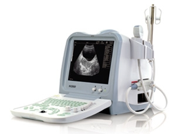
KX2600
Equipo digital para diagnostico por ultrasonido
Caracteristicas
- Manipulaciòn de menù-modo, trae lengua：inglès,ruso,portuguès,francès,español.
- Software con paquete de càlculos Abdominal,obstètrico,ginecològico,urològico ect.
- Teclado retroiluminado.
- 10 grados de profundidad de ajuste en toda la vision,profundidad maxima236mm.
- Cinco modos：B、2B、4B 、B/M、M.
- Color pseudo：8 tipos，Monitor Color LCD es disponible.
- Almacenamiento permanetemente de 100 cuadros, cine loop 256 cuadros.
- Doble puertos de USB que apoyan memoria USB,y apoyan impresora laser.
Parametros
- Aplica control sistema ARM7 incrustada +sistema senal FPGA+ hardware sistema tecnologia propietaria de ultrasonido,mas confiable de la estabilidad.
- 10 pulgadas monitor CRT con alta resoluciòn.
- Manipulaciòn de menù-modo, trae lengua：inglès,ruso,portuguès,francès,español.
- Doble puertos de transductor,puede idendificar los transductores automaticamente,apoya unos transductores opcionales .
- Marca de cuerpo： 64.
- Modo：B、2B、4B 、B/M、M.
- 10 grados de profundidad de ajuste,profundidad máxima de exploración 236mm.
- Beneficio：0～127dB.
- Ambito dinamico：27～90dB.
- Escalas de grises：256.
- TGC：8.
- Frecuencia de frama：30framas/segundo.
- Color pseudo ：8 tipos.
- Almacenaje de imagines:unidad principal de disco C 32MB ,almacenamiento permanetemente de 100 cuadros.
- Cine loop：256.
- Punciòn guìa con dos guìa lineas aprobados que sus àngulos y posiciòn pueden ajustar.
- Medición normal: distancia,circunferencia, área，volumen,angulo,longitud y estenosis área.
- Medida obstetrica y analisis：viene 15 tablas de OB y varios mediciones de gestacion和AFI,curva de crecimiento fetal,informe OB.
- Medida Gyn. Y analisis: software con paquete de càculo normal,informe GYN ,ect.
- Medida urologica y analisis:orina residual,volumen de prostate,informe urologico.
- Doble puertos de USB que apoyan memoria USB,y apoyan impresora laser.
- Salida de TV：ＰＡＬ/ＮＴＳＣ，puede conectar impresora termica y workstation.
- DICOM3.0.
- Fuente de alimentaciòn：AC110/230 -15％～＋10％ 60/50Hz±1Hz.
- Peso neto：10kg.
- Dimension：400x280x325mm（LxAxAL）.
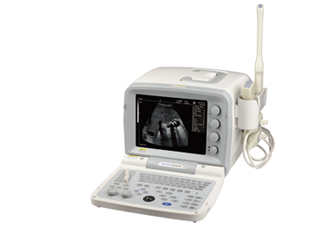
KX2000G
Equipo digital para diagnostico por ultrasonido
Caracteristicas
- 10 pulgadas monitor CRT con alta resoluciòn.
- Uno puerto de transductor,apoya unos transductores opcionales.
- Lengua：chino/ingles.
- 8 tipos de ampliaciòn de ajuste,profundidad máxima de exploración 240mm.
- Almacenamiento permanetemente de 100 cuadros ,cine loop:256 cuadros.
- El toque ligero teclado, trackball fotoeléctrico y codificador, fácil de operar.
- Salida de TV：ＰＡＬ/ＮＴＳＣ，impresora video y workstation son disponibles.
- Medición normal: distancia,circunferencia, área，volumen,ritmo cardiaco,semana gesticional ,EFW,fehca prevista parto.
- Medición de obstétrica y el análisis: 10 de tipo de software obstétrica, varios de medición GA y el informe de OB.
Parametros
- Aplica control sistema ARM7 incrustada +sistema senal FPGA+ hardware sistema tecnologia propietaria de ultrasonido,mas confiable de la estabilidad.
- 10 pulgadas monitor CRT con alta resoluciòn.
- Lengua：chino/ingles.
- Uno puerto de transductor,puede idendificar los transductores automaticamente,apoya unos transductores opcionales.
- Marca de cuerpo： 64.
- Modo：B、2B、4B 、B/M、M.
- Ocho tipos de amplicación,profundidad máxima de exploración 240mm. Beneficio：0～127dB.
- Ambito dinamico：27～90dB.
- Escalas de grises：256.
- Frecuencia de frama：30framas/segundo.
- Almacenaje de imagenes:Almacenamiento permanetemente de 100 cuadros.
- Cine loop：256.
- Punciòn guìa con dos guìa lineas aprobados que sus àngulos y posiciòn pueden ajustar.
- Medición normal: distancia,circunferencia, área，volumen,ritmo cardiaco,semana gesticional,EFW,fecha prevista parto.
- Medida obstetrica y analisis：10 tablas de OB y Reporte OB.
- Trae puerto USB puede pasar imgaen.
- Salida de TV：ＰＡＬ/ＮＴＳＣ，puede conectar impresora termica y workstation.
- Fuente de alimentaciòn：AC110/230 -15％～＋10％ 60/50Hz±1Hz.
- Peso neto：12kg.
- Dimension：387x319x270mm（LxAxAL）.
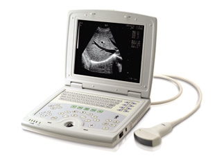
KX5000
Equipo digital para diagnostico por ultrasonido
Caracteristicas
- Diseño LAPTOP ,ligero y pequeno,màs conveniente de trabajar afuera.
- 10.4 pulgadas monitor LCD con alta brillo,alta contraste,ancha vision,las imgaenes màs finos y lisos.
- lengua：chino/ingles.
- almacenamiento permanetemente de 100 cuadros ,cine loop:256 cuadros.
- color pseudo：8 tipos.
- El toque ligero teclado, trackball fotoeléctrico y codificador, fácil de operar.
- Puerto USB apoya memoria flash y impresora laser color.
- salida de TV：ＰＡＬ/ＮＴＳＣ，impresora video y workstation son disponibles.
- Medición normal: distancia,circunferencia, área，volumen,ritmo cardiaco,semana gesticional ,EFW,fehca prevista parto ect.
- 15 tipo de software de obstetricia, varios de medición GA y el informe de OB.
- viene 2 baterias ,cada una trabaja durante 200minutos.
Parametros
- Aplica control sistema ARM7 incrustada y con hardware sistema miniatura tecnologia propietaria de ultrasonido.
- 10.4 pulgadas monitor LCD con alta brillo,alta contraste,ancha vision,las imgaenes màs finos y lisos.
- lengua：chino/ingles.
- uno puerto de transductor,puede idendificar los transductores automaticamente,apoya unos transductores opcionales.
- marca de cuerpo： 64.
- modo：B、2B、4B 、B/M、M.
- ocho tipos de amplicación,profundidad máxima de exploración 240mm.
- Beneficio：0～127dB.
- ambito dinamico：27～90dB.
- escalas de grises：256.
- TGC：ajuste de campo cercano y lejano.
- Son Ajustable los focos.
- frecuencia de frama：30framas/segundo.
- color pseudo：8 tipos.
- Almacenaje de imagenes:Almacenamiento permanetemente de 100 cuadros.
- cine loop：256.
- Punciòn guìa con dos guìa lineas aprobados que sus àngulos y posiciòn pueden ajustar.
- Medición normal: distancia,circunferencia, área，volumen,ritmo cardiaco,semana gesticional,EFW,fecha prevista parto.
- Medida obstetrica y analisis：viene 15 tablas de OB y varios mediciones de gestacion.
- Doble puertos de USB que apoyan memoria USB,y apoyan impresora laser.
- salida de TV：ＰＡＬ/ＮＴＳＣ，puede conectar impresora termica y workstation.
- Fuente de alimentaciòn：AC110/230 -15％～＋10％ 60/50Hz±1Hz.
- bateria：grande capacidad bateria(2700MAh)，trabaja durante 200 minutos.
- peso neto：2.4kg.
- dimension：290x245x48mm（LxAxAL）.
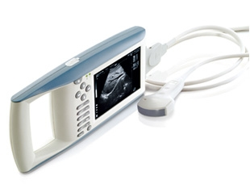
KX5100
Equipo digital para diagnostico por ultrasonido
Caracteristicas
- diseño de palma,con patente tecnica,pequeño y ligero,conveniente de llevar y trabjar en el campo.
- 6.4 pulgadas monitor LCD con alta brillo,alta contraste,ancha vision,las imgaenes màs finos y lisos.
- manipulaciòn de menù-modo，lengua：chino/ingles.
- almacenamiento permanetemente de 100 cuadros ,cine loop:256 cuadros.
- color pseudo：8 tipos.
- Puerto USB apoya memoria flash y impresora laser color.
- salida de TV：ＰＡＬ/ＮＴＳＣ，impresora video y workstation son disponibles.
- 15 tipo de software de obstetricia, varios de medición GA y el informe de OB.
- ratòn es disponible ,màs conveniente el manejo.
- viene 2 baterias ,cada una trabaja durante 200minutos.
Parametros
- Aplica control sistema ARM7 incrustada y con hardware sistema miniatura tecnologia propietaria de ultrasonido.
- 6.4 pulgadas monitor LCD con alta brillo,alta contraste,ancha vision,las imgaenes màs finos y lisos.
- lengua：chino/ingles.
- uno puerto de transductor,puede idendificar los transductores automaticamente,apoya unos transductores opcionales.
- marca de cuerpo： 64.
- modo：B、2B、4B 、B/M、M.
- ocho tipos de amplicación,profundidad máxima de exploración 240mm.
- Beneficio：0～127dB.
- ambito dinamico：27～90dB.
- escalas de grises：256.
- TGC：ajuste de campo cercano y lejano.
- Son Ajustable los focos.
- frecuencia de frama：30framas/segundo.
- color pseudo：8 tipos.
- Almacenaje de imagenes:Almacenamiento permanetemente de 100 cuadros.
- cine loop：256.
- Punciòn guìa con dos guìa lineas aprobados que sus àngulos y posiciòn pueden ajustar.
- Medición normal: distancia,circunferencia, área，volumen,ritmo cardiaco,semana gesticional,EFW,fecha prevista parto.
- Medida obstetrica y analisis：viene 15 tablas de OB y varios mediciones de gestacion.
- doble puertos de USB que apoyan memoria USB,y apoyan impresora laser.
- salida de TV：ＰＡＬ/ＮＴＳＣ，puede conectar impresora termica y workstation.
- Fuente de alimentaciòn：AC110/230 -15％～＋10％ 60/50Hz±1Hz.
- bateria：dos baterias con capacidad(2400MAh)，trabaja durante 200 minutos.
- peso neto：1.5kg.
- dimension：326x162x45mm（LxAxAL）.
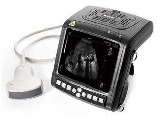
KX5200
Equipo digital para diagnostico por ultrasonido
Caracteristicas
- diseño de muñeca,con patente tecnica,pequeño y ligero,conveniente de llevar y trabjar en el campo.
- 5.7 pulgadas monitor LCD con alta brillo,alta contraste,ancha vision,las imgaenes màs finos y lisos.
- manipulaciòn de menù-modo，lengua：chino/ingles.
- almacenamiento permanetemente de 100 cuadros ,cine loop:256 cuadros.
- color pseudo：8 tipos.
- Puerto USB apoya memoria flash y impresora laser color.
- salida de TV：ＰＡＬ/ＮＴＳＣ，impresora video y workstation son disponibles.
- ratòn es disponible ,màs conveniente el manejo.
- congelar o descongelar la imagen por la liberación del obturador.
- viene 2 baterias ,cada una trabaja durante 200minutos.
Parametros
- Aplica control sistema ARM7 incrustada y con hardware sistema miniatura tecnologia propietaria de ultrasonido.
- 5.7 pulgadas monitor LCD con alta brillo,alta contraste,ancha vision,màs conveniente de trabajar en el campo.
- lengua：chino/ingles.
- uno puerto de transductor,puede idendificar los transductores automaticamente,apoya unos transductores opcionales.
- marca de cuerpo： 64.
- modo：B、2B、4B 、B/M、M.
- ocho tipos de amplicación,profundidad máxima de exploración 240mm.
- Beneficio：0～127dB.
- ambito dinamico：27～90dB.
- escalas de grises：256.
- TGC：ajuste de campo cercano y lejano.
- Son Ajustable los focos.
- frecuencia de frama：30framas/segundo.
- color pseudo：8 tipos.
- Almacenaje de imagenes:Almacenamiento permanetemente de 100 cuadros.
- cine loop：256.
- Punciòn guìa con dos guìa lineas aprobados que sus àngulos y posiciòn pueden ajustar.
- Medición normal: distancia,circunferencia, área，volumen,ritmo cardiaco,semana gesticional,EFW,fecha prevista parto.
- Medida obstetrica y analisis：viene 15 tablas de OB y varios mediciones de gestacion.
- Doble puertos de USB que apoyan memoria USB,y apoyan impresora laser.
- salida de TV：ＰＡＬ/ＮＴＳＣ，puede conectar impresora termica y workstation.
- Fuente de alimentaciòn：AC110/230 -15％～＋10％ 60/50Hz±1Hz.
- bateria：dos baterias con capacidad(2400MAh)，trabaja durante 200 minutos.
- peso neto：1.1kg.
- dimension：155x180x80mm（LxAxAL）.
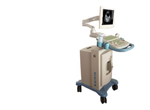
KX2805
Equipo digital para diagnostico por ultrasonido
Caracteristicas
- Diseño de carro, un teclado giratorio adoptar 80 elementos de configuración avanzada de hardware, para llegar mejor calidad de imagen.
- Manipulaciòn de menù-modo,viene lengua inglès,ruso,portuguès,francès,español.
- Optimización del sistema de navegación sincronizada operación.
- Función de preajuste.
- Software con paquete de càlculos Abdominal,obstètrico,ginecològico,urològico,cardiològico ect.
- Teclado retroiluminado.
- 28 grados de profundidad de ajuste en toda la vision,profundidad maxima245mm.
- Función de guiar la punción, punción de la sonda opcional, el requisito de la realización de la intervención de ultrasonid.
- Almacenamiento permanetemente de 100 cuadros, cine loop 256 cuadros.
- Doble puertos de USB ,memoria flash y impresora laser son disponibles.
- DICOM3.0.
Parametros
- Aplica control sistema ARM9 incrustada +sistema senal FPGA+ hardware sistema tecnologia propietaria de ultrasonido,mas confiable de la estabilidad.
- 12 pulgadas monitor LCD.
- Manipulaciòn de menù-modo, trae lengua：inglès,ruso,portuguès,francès,español.
- Doble puertos de transductor,puede idendificar los transductores automaticamente,apoya unos transductores opcionales.
- Elementos：80elemenos.
- Marca de cuerpo： 64.
- Modo：B、2B、4B 、B/M、M.
- 28 grados de profundidad de ajuste,profundidad máxima de exploración 245mm.
- Beneficio：0～127dB.
- Ambito dinamico：27～100dB.
- Escalas de grises：256.
- TGC：8.
- Frecuencia de frama：30framas/segundo.
- Viene color pseudo 8 tipos，Monitor Color LCD es disponible.
- Almacenaje de imagines:unidad principal de disco C 32MB ,almacenamiento permanetemente de 100 cuadros.
- Cine loop：256.
- Punciòn guìa con dos guìa lineas aprobados que sus àngulos y posiciòn pueden ajustar.
- Medición normal: distancia,circunferencia, área，volumen,angulo,longitud y estenosis área.
- Medida obstetrica y analisis：viene 15 tablas de OB y varios mediciones de gestacion和AFI,curva de crecimiento fetal,informe OB.
- Medida cardiaca y analisis:càculo M normal y software paquete de càculo en modo B , informe cardiaca.
- Medida Gyn. Y analisis: software con paquete de càculo normal,informe GYN ,ect.
- Medida urologica y analisis:orina residual,volumen de prostate,informe urologico.
- Funciòn estadìstica ：sectional view(secciones) y histograma.
- Doble puertos de USB que apoyan memoria USB,y apoyan impresora laser.
- Salida de TV：ＰＡＬ/ＮＴＳＣ，puede conectar impresora termica y workstation.
- DICOM3.0.
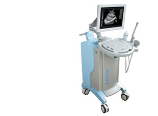
KX2802
Equipo digital para diagnostico por ultrasonido
Caracteristicas
- Diseño del carro, avanzó 80 elementos de configuración de hardware, de imagen excelente.
- Manipulaciòn de menù-modo,viene lengua inglès,ruso,portuguès,francès,español.
- Optimización del sistema de navegación sincronizada operación.
- Función de preajuste.
- Software con paquete de càlculos Abdominal,obstètrico,ginecològico,urològico, cardiològico ect
- Teclado retroiluminado.
- 28 grados de profundidad de ajuste en toda la vision,profundidad maxima245mm.
- Función de guiar la perforación, la sonda de perforación opcional, el requisito de la realización de la intervención de ultrasonido.
- Almacenamiento permanetemente de 100 cuadros, cine loop 256 cuadros.
- Doble puertos de USB ,memoria flash y impresora laser son disponibles.
- DICOM3.0.
Parametros
- Aplica control sistema ARM7 incrustada +sistema senal FPGA+ hardware sistema tecnologia propietaria de ultrasonido,mas confiable de la estabilidad.
- 14 pulgadas monitor CRT con alta resoluciòn.
- Manipulaciòn de menù-modo, trae lengua：inglès,ruso,portuguès,francès,español.
- Doble puertos de transductor,puede idendificar los transductores automaticamente,apoya unos transductores opcionales.
- Marca de cuerpo： 64.
- Modo：B、2B、4B 、B/M、M.
- 28 grados de profundidad de ajuste,profundidad máxima de exploración 245mm.
- Beneficio：0～127dB.
- Ambito dinamico：27～100dB.
- Escalas de grises：256.
- TGC：8.
- Frecuencia de frama：30framas/segundo.
- Almacenaje de imagines:unidad principal de disco C 32MB ,almacenamiento permanetemente de 100 cuadros.
- Cine loop：256.
- Punciòn guìa con dos guìa lineas aprobados que sus àngulos y posiciòn pueden ajustar.
- Medición normal: distancia,circunferencia, área，volumen,angulo,longitud y estenosis área.
- Medida obstetrica y analisis：viene 15 tablas de OB y varios mediciones de gestacion和AFI,curva de crecimiento fetal,informe OB.
- Medida cardiaca y analisis:càculo M normal y software paquete de càculo en modo B , informe cardiaca.
- Medida Gyn. Y analisis: software con paquete de càculo normal,informe GYN ,ect.
- Medida urologica y analisis:orina residual,volumen de prostate,informe urologico.
- Funciòn estadìstica ：sectional view(secciones) y histograma.
- Doble puertos de USB que apoyan memoria USB,y apoyan impresora laser.
- Salida de TV：ＰＡＬ/ＮＴＳＣ，puede conectar impresora termica y workstation.
- DICOM3.0.
- Fuente de alimentaciòn：AC110/230 -15％～＋10％ 60/50Hz±1Hz.
- Peso neto：39kg.
- Dimension：910x635x1155mm（LxAxAL）.
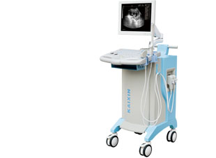
KX2000E
Equipo digital para diagnostico por ultrasonido
Caracteristicas
- Diseño de la carro, el diseño de hardware contratada, para llegar el mejor calidad de imagen.
- Manipulaciòn de menù-modo, trae lengua：inglès,ruso,portuguès,francès,español.
- Software con paquete de càlculos Abdominal,obstètrico,ginecològico,urològico ect.
- Teclado retroiluminado.
- Diez grados de profundidad de ajuste en toda la vision,profundidad maxima 236mm.
- Cinco modos：B、2B、4B 、B/M、M.
- Color pseudo：8 tipos.
- Almacenamiento permanetemente de 100 cuadros, cine loop 256 cuadros.
- Doble puertos de USB que apoyan memoria USB,y apoyan impresora laser.
Parametros
- Aplica control sistema ARM7 incrustada +sistema senal FPGA+ hardware sistema tecnologia propietaria de ultrasonido,mas confiable de la estabilidad.
- 14 pulgadas monitor CRT con alta resoluciòn.
- Manipulaciòn de menù-modo, trae lengua：inglès,ruso,portuguès,francès,español.
- Doble puertos de transductor,puede idendificar los transductores automaticamente,apoya unos transductores opcionales.
- Marca de cuerpo： 64.
- Modo：B、2B、4B 、B/M、M.
- 10 grados de profundidad de ajuste,profundidad máxima de exploración 236mm.
- Beneficio：0～127dB.
- Ambito dinamico：27～90dB.
- Escalas de grises：256.
- TGC：8.
- Frecuencia de frama：30framas/segundo.
- Pseudo color：8 tipos.
- Almacenaje de imagines:unidad principal de disco C 32MB ,almacenamiento permanetemente de 100 cuadros.
- Cine loop：256.
- Punciòn guìa con dos guìa lineas aprobados que sus àngulos y posiciòn pueden ajustar.
- Medición normal: distancia,circunferencia, área，volumen,angulo,longitud y estenosis área.
- Medida obstetrica y analisis：viene 15 tablas de OB y varios mediciones de gestacion AFI,curva de crecimiento fetal,informe OB.
- Medida Gyn. Y analisis: software con paquete de càculo normal,informe GYN ,ect.
- Medida urologica y analisis:orina residual,volumen de prostate,informe urologico.
- Funciòn estadìstica：sectional view(secciones) y histograma.
- Doble puertos de USB que apoyan memoria USB,y apoyan impresora laser.
- Salida de TV：ＰＡＬ/ＮＴＳＣ，puede conectar impresora termica y workstation.
- DICOM3.0.
- Fuente de alimentaciòn：AC110/230 -15％～＋10％ 60/50Hz±1Hz.
- Peso neto:32kg.
- Dimension：725x445x890mm（LxAxAL）.
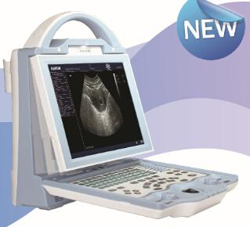
KX5600
Equipo digital para diagnostico por ultrasonido en Modo B
Características
- Pantalla retroiluminada de alta resolución de 10.4 pulgadas.
- Soporte de multi-idiomas：inglés,ruso,portugués,francés,español.
- Capacidad para dos sondas, con autoidentificación para diferentes tipos.
- Marcas corporales: Hasta 64 tipos de marcas corporales indicando la ubicación de la sonda.
- Contraste desde 27 hasta 90 dB
- Diez grados de profundidad de ajuste en toda la vision,profundidad maxima 236mm.
- Cinco modos：B、2B、4B 、B/M、M.
- Color pseudo：8 tipos.
- Disco duro de 4GB para almacenar hasta 5000 imágenes, cine loop 256 cuadros.
Parámetros
- Pantalla retroiluminada de alta resolución de 10.4 pulgadas.
- Aplica control sistema ARM7 incrustada +sistema senal FPGA+ hardware sistema tecnologia propietaria de ultrasonido,mas confiable de la estabilidad.
- Soporte de multi-idiomas：inglés,ruso,portugués,francés,español.
- Capacidad para dos sondas, con autoidentificación para diferentes tipos.
- Marcas corporales: Hasta 64 tipos de marcas corporales indicando la ubicación de la sonda.
- Modo：B、2B、4B 、B/M、M.
- 10 grados de profundidad de ajuste,profundidad máxima de exploración 236mm.
- Contraste：27～90dB.
- Escalas de grises：256.
- TGC：8.
- Tasa de actualización de pantalla：30framas/segundo.
- Pseudo color：8 tipos.
- Almacenaje de imagines:unidad principal de disco 4GB, almacenamiento permanetemente de 5000 imágenes.
- Cine loop：256.
- Punciòn guìa con dos guìa lineas aprobados que sus àngulos y posiciòn pueden ajustar.
- Medición normal: distancia,circunferencia, área，volumen,angulo,longitud y estenosis área.
- Medida obstetrica y analisis：viene 15 tablas de OB y varios mediciones de gestacion AFI,curva de crecimiento fetal,informe OB.
- Medida urologica y analisis:orina residual,volumen de prostate,informe urologico.
- Salida de TV：PAL/NTSC, puede conectar impresora termica y workstation.
- Fuente de alimentaciòn：AC100/240 -15％～＋10％ 60/50Hz±1Hz.
- Salida del adaptador：12.8 DC - 3.0A
- Peso neto: 4.5kg.
- Dimension：725x445x890mm（LxAxAL）.
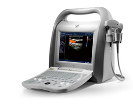
DCU10
Instrumento de diagnóstico ultrasónico Doppler a Color
Características
- Capacidad para 2 sondas autodetectables.
- Sonda abdominal convexa multifrecuencia de hasta 3.5MHz.
- Sonda trans-vaginal multifrecuencia de hasta 6.5MHz.
- Sonda lineal multifrecuencia de hasta 7.5MHz.
- Grabadora de video (opcional).
- Immpresora láser (opcional).
Parámetros
- Menú de interfaz de operación en inglés.
- Monitor LED de 10,4 pulgs de alta resolución, libre de destellos.
- Adaptador graduable 100V-220v a 1.2-0.6A
- 16GB de almacenamiento para videos e imágenes.
- Dimension：400x186x385mm（LxAxAL）.
- Peso neto: 8.8kg.
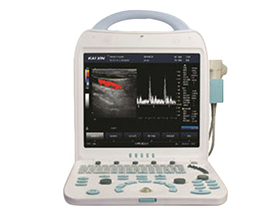
DCU10 Plus Full Digital Color Doppler Ultrasound scanner
Is available for the diagnosis of abdomen (including GYN and OB), superficial organs, cardiology, peripheral vessel, urology and others.
Características
- Gray scale：256 grades
- Color scale：256 grades
- Monitor：15”flicker free high resolution medical color LCD
- Power supply：100-240V～ frequency：50-60Hz 3.0A
- Power consumption：≤150VA MAX Main unit size：416 mm（L）´205mm（w）´ 422mm（H)
- Net weight of main unit：approx. 12Kg(not including probe)
- Gross weight of whole machine: approx. 17Kg
- Package size：approx. 505 mm（L）´350mm（W）´ 640mm（H）
- U-disk (support document management/software upgrades/one-key storage), DICOM port
- Convenient for doctor to manage data, supporting for transmission.
- TV output port.
- Foot switch available.
- Probe socket：3 probe socket，automatically identify the probe, support several optional probes (convex, linear, micro-convex, trans-vaginal,phased array).
Configuración
- B、B/B、4B mode
- M、B/M mode
- CFM
- PDI
- PW
- CW
- THI
7.5MHz L40 broadband linear
- Probe elements：96
- Frequency scope：5.0MHz－12.0MHz
- 5 Multi-frequency:5.0/6.0/7.5/9.0/12.0
- Max scanning depth≥60mm depth range:38-115mm
- Blind zone：≤3mm
- Resolution：axial resolution ≤0.5mm，lateral resolution≤1mm
- Precision of geometric location：lateral≤5%，vertical≤5%
6.5MHz R10 trans-vaginal broadband
- Probe elements：96
- Scanning angle：135°
- Frequency scope：4.5MHz－9.0MHz
- 5 multi-frequency：4.5/5.5/6.5/7.5/9.0
- Max scanning depth≥60mm depth range: 46-154mm
- Blind zone：≤4mm
- Resolution：axial resolution ≤1mm，lateral resolution≤1mm
- Precision of geometric location：Product Standard shows:lateral≤10%，vertical≤5%
Configuración Opcional
Media & peripheral
- Printer o Video Printer: Sony
- UP-897MD
- I-station integral work station for image storage, report generation and cloud print.
Optional Devices
- Foot Switch/li>
- Termal Printer
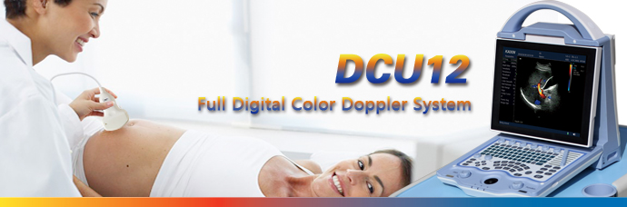
DCU12
Sistema Doppler a Color
Características
- Sonda convexa para abdomen multifrecuencia de hasta 3.5MHz.
- Sonda trans-vaginal multifrecuencia de hasta 6.5MHz.
- Sonda lineal multifrecuencia de hasta 7.5MHz.
- Estación de trabajo.
- Retícula.
Parámetros
- 256 tonalidades en escala de grises.
- 256 tonalidades en escala de colores.
- Menú de interfaz de operación en inglés.
- Monitor LED de 10,4 pulgs de alta resolución, libre de destellos.
- Adaptador graduable 100V-220v a 1.2-0.6A
- Salida del adaptador：12.8 DC - 3.0A
- Dimension：256x445x890mm（LxAxAL）.
- Peso neto: 4.5kg.
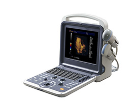
DCU40
The familiar PC system makes the system intuitive and easy to use. Flexible design allows system to be used conveniently.
Probes information
Standard
- Probes: 3.5Mhz abdominal probe
5 Steps Multi-frecuency: 2.0, 3.0, 3.5, 4.0, 5.5Mhz - Probes: 7.5Mhz linear probe
5 Steps Multi-frecuency: 6.0, 6.5, 7.5, 10.0, 12.0Mhz
Options
- 6.5Mhz transvaginal probe
5 Steps Multi-frecuency: 2.0, 3.0, 3.5, 4.0, 5.5Mhz - Probes: 3.5MHz micro-convex probe
5 Steps Multi-frecuency: 2.0, 2.5, 3.5, 4.5, 5.0Mhz - Probes: 3.5Mhz phased array probe
5 Steps Multi-frecuency: 2.0, 3.0, 3.5, 4.0, 5.5Mhz - Probes: 4D volume prob
5 Steps Multi-frecuency: 2.0, 3.0, 3.5, 4.0, 5.5Mhz
Technical specification
Displaying Mode
- B,B/B,4B,B/M,M,PW,B/C,B/C/D,B/D, duplex, triplex, CFM
Signal Processing
- THI
- PSHI TM broadband multi-frequency harmonic imag
- Speckle-reduction
- Power adjustable
- Smoothing function
- iBeam TM intelligent space image technology
- iZoom TM undistorted full screen image
- Free Xros M
- Engineer control technology with low power consumption
- Edge enhancement Image optimizing dispoal
- One-key optimization
- Image conversion
- Doppler Soun output volume adjustable
- Wall filter adjustable
- Base line adjustable
- Sampling frame adjustable
- Spctrum sampling volume adjustable
- Spectrum sampling volume angle adjustable
- PRF adjustable
General Measurement
- B mode-distance, circumference, area, volume, angle, area Red, Diam Red
- M mode-distance, time, velocity, heart rate
Abdomen Measurement
- Liver, GB, Aorta, GBWT, CBD, Portal Vein, Spleen
OB Packages
- EDD table :GS, BPD, CRL, FL, YS, TAD, LV, OFD, NT, AC, HC, APAD, Cxlength
Gynecological Packages
- Uterine measurement (Uterine diameter, uterine endometrial); left/right ovary measurement; left/right sacculus measurement; Cervix; Uterine dept
Urology Packages
- Left/right kidney measurement, Volume, Corex
Small parts Measurement
- Left/ right thyroid, volume, Isthnus and calculating report
Cardiac Measurement Package
- Heart rate, Valve speed, LV, aortic, mitral, ventricular
Skeletal & Muscles
- Skeletal & Muscles, distance, area, Hip an
Vascular
- Senosis D, senosis A, Lt/Rt VVA, Lt/Rt Rulb, Lt/Rt IC
Scanning depth
- 300mm
Body mark
- Abdominal ,Cardiology, Gynecology, Obstetrics, Small parts
Cine loop
- Automatically & manually, speed control
Image storage format
- BMP, JPEG, PNG
Input/output ports
- VGA, USB port, DICOM po
Standard Configuration
- Main unit, 12 inch LCD monitor, 3.5Mhz convex probe, 7.5Mhz linear probe,2 probe connectors, hard dis
Options
- 6.5Mhz transvaginal probe, 3.5Mhz micro-convex probe, 3.5Mhz phased array probe, 4D volume probe, trolley, battery, laser printer, DICOM
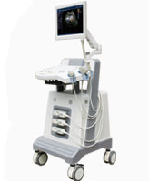
DCU2
A - Scanner
Características
- 3 Ranudas de sondas con autodeteccíon.
- Sonda convexa para abdomen multifrecuencia de hasta 3.5MHz.
- Sonda trans-vaginal multifrecuencia de hasta 6.5MHz.
- Sonda lineal multifrecuencia de hasta 7.5MHz.
- Grabadora de video (opcional).
Parámetros
- 256 tonalidades en escala de grises.
- 256 tonalidades en escala de colores.
- Lenguaje inglés.
- Pantalla LCD de 15 pulgadas libre de destellos.
- Fuente de poder 110~220v.
- Salida a TV PAL/NTSC.
- Peso 35Kg.
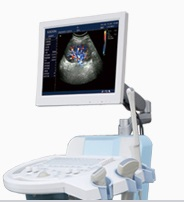
DCU5
A - Scanner
Características
- 2 Ranuras de sondas con autodeteccíon.
- Sonda convexa para abdomen multifrecuencia de hasta 3.5MHz.
- Sonda trans-vaginal multifrecuencia de hasta 6.5MHz.
- Sonda lineal multifrecuencia de hasta 7.5MHz.
- Grabadora de video (opcional).
Parámetros
- 256 tonalidades en escala de grises.
- 256 tonalidades en escala de colores.
- Lenguaje inglés.
- Pantalla LCD de 15 pulgadas libre de destellos.
- Fuente de poder 110~220v.
- Salida a TV PAL/NTSC.
- Peso 30Kg.